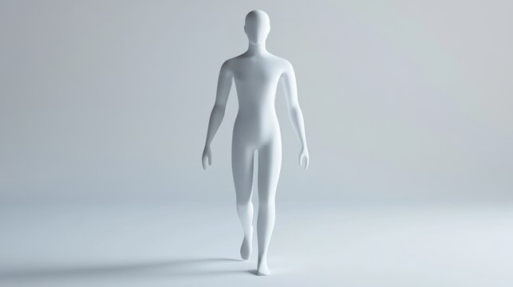

<!DOCTYPE html>
<html lang="en">
<head>
  <meta charset="UTF-8" />
  <title>Recovery Map | Healthara</title>
  <meta name="viewport" content="width=device-width, initial-scale=1.0" />
  <script src="https://cdn.tailwindcss.com"></script>
  <style>
    .bodymap-container {
      position: relative;
      width: 320px; /* Adjust based on your image size */
      margin: 0 auto;
    }
    .bodymap-img {
      width: 100%;
      display: block;
    }
    .bodymap-btn {
      position: absolute;
      background: rgba(0,255,255,0.15); /* Light cyan transparent background */
      border: 2px solid #06b6d4; /* Cyan border */
      border-radius: 50%;
      cursor: pointer;
      transition: background 0.2s, border 0.2s;
    }
    .bodymap-btn:hover {
      background: rgba(34,211,238,0.3); /* Slightly darker cyan on hover */
      border-color: #0ea5e9; /* Darker cyan border on hover */
    }
    /* Example positions for demo, adjust as needed for your image */
    /* These positions are relative to the bodymap-container */
    .btn-neck    { left: 44%; top: 12%; width: 40px; height: 40px; }
    .btn-shoulder{ left: 30%; top: 22%; width: 50px; height: 50px; }
    .btn-back    { left: 44%; top: 32%; width: 40px; height: 60px; }
    .btn-wrist   { left: 17%; top: 48%; width: 30px; height: 30px; }
    .btn-knee    { left: 44%; top: 62%; width: 40px; height: 40px; }
    .btn-ankle   { left: 44%; top: 82%; width: 40px; height: 40px; }
  </style>
</head>
<body class="min-h-screen bg-gradient-to-br from-slate-50 via-blue-50 to-cyan-50">

  <div class="container mx-auto px-4 py-8">
    <div id="recovery-root"></div>
  </div>

  <script>
    // Body parts and display names
    const bodyParts = [
      { part: 'neck', name: 'Neck' },
      { part: 'shoulder', name: 'Shoulder' },
      { part: 'back', name: 'Back' },
      { part: 'wrist', name: 'Wrist' },
      { part: 'knee', name: 'Knee' },
      { part: 'ankle', name: 'Ankle' }
    ];

    // Suggestions for each part
    const suggestions = {
      neck: [
        { icon: '🧘', title: 'Neck Stretch', desc: 'Gently tilt your head side to side to relieve tension.' },
        { icon: '💆', title: 'Self-Massage', desc: 'Use your fingers to massage the base of your skull.' },
        { icon: '🪑', title: 'Ergonomics', desc: 'Adjust monitor height to eye level.' },
        { icon: '🥗', title: 'Nutrition', desc: 'Stay hydrated and eat anti-inflammatory foods.' }
      ],
      shoulder: [
        { icon: '🧘', title: 'Shoulder Rolls', desc: 'Roll shoulders forward and backward 10x.' },
        { icon: '💆', title: 'Massage', desc: 'Massage the upper trapezius muscle.' },
        { icon: '🪑', title: 'Ergonomics', desc: 'Keep shoulders relaxed at your desk.' },
        { icon: '🥗', title: 'Nutrition', desc: 'Include omega-3 rich foods.' }
      ],
      back: [
        { icon: '🧘', title: 'Cat-Cow Stretch', desc: 'Alternate arching and rounding your back.' },
        { icon: '💆', title: 'Foam Rolling', desc: 'Roll upper and lower back gently.' },
        { icon: '🪑', title: 'Ergonomics', desc: 'Use lumbar support when sitting.' },
        { icon: '🥗', title: 'Nutrition', desc: 'Eat foods rich in magnesium.' }
      ],
      wrist: [
        { icon: '🧘', title: 'Wrist Flexor Stretch', desc: 'Extend arm, palm up, gently pull fingers down.' },
        { icon: '💆', title: 'Massage', desc: 'Massage forearm muscles.' },
        { icon: '🪑', title: 'Ergonomics', desc: 'Keep wrists neutral while typing.' },
        { icon: '🥗', title: 'Nutrition', desc: 'Vitamin B6 may help nerve health.' }
      ],
      knee: [
        { icon: '🧘', title: 'Quad Stretch', desc: 'Stand, pull foot to glutes, hold.' },
        { icon: '💆', title: 'Massage', desc: 'Massage around kneecap gently.' },
        { icon: '🪑', title: 'Ergonomics', desc: 'Avoid sitting with knees bent too long.' },
        { icon: '🥗', title: 'Nutrition', desc: 'Collagen-rich foods support joints.' }
      ],
      ankle: [
        { icon: '🧘', title: 'Ankle Circles', desc: 'Rotate ankles clockwise and counterclockwise.' },
        { icon: '💆', title: 'Massage', desc: 'Massage Achilles and foot arch.' },
        { icon: '🪑', title: 'Ergonomics', desc: 'Support feet flat on floor.' },
        { icon: '🥗', title: 'Nutrition', desc: 'Calcium and vitamin D for bone health.' }
      ]
    };

    let selectedBodyPart = null;
    let selectedBodyPartName = '';

    function renderRecoveryMap() {
      const root = document.getElementById('recovery-root');
      root.innerHTML = '';

      if (!selectedBodyPart) {
        // --- Body Map Selection Screen ---
        root.innerHTML = `
          <div class="max-w-6xl mx-auto">
            <div class="text-center mb-12">
              <div class="inline-flex items-center gap-2 bg-white/80 backdrop-blur-sm px-6 py-3 rounded-full shadow-lg mb-6">
                <svg class="w-6 h-6 text-rose-500" fill="none" stroke="currentColor" stroke-width="2" viewBox="0 0 24 24"><path d="M12 21C12 21 7 16.5 7 12.5C7 9.5 9.5 7 12 7C14.5 7 17 9.5 17 12.5C17 16.5 12 21 12 21Z"/></svg>
                <span class="text-lg font-semibold bg-gradient-to-r from-cyan-600 to-teal-600 bg-clip-text text-transparent">
                  Recovery Map
                </span>
                <svg class="w-5 h-5 text-amber-500" fill="none" stroke="currentColor" stroke-width="2" viewBox="0 0 24 24"><path d="M12 2v2M12 20v2M4.22 4.22l1.42 1.42M18.36 18.36l1.42 1.42M2 12h2M20 12h2M4.22 19.78l1.42-1.42M18.36 5.64l1.42-1.42"/></svg>
              </div>
              <h1 class="text-4xl md:text-5xl font-bold text-gray-900 mb-4">
                Find Your Perfect
                <span class="block bg-gradient-to-r from-cyan-600 to-teal-600 bg-clip-text text-transparent">
                  Recovery Solution
                </span>
              </h1>
              <p class="text-xl text-gray-600 max-w-2xl mx-auto leading-relaxed">
                Tap any part of the body model to discover targeted stretches, massage techniques, 
                ergonomic tips, and healing foods designed just for you.
              </p>
            </div>
            <div class="flex justify-center mb-8">
              <div class="p-8 border-0 shadow-2xl bg-white/90 backdrop-blur-sm rounded-3xl">
                <div class="text-center mb-6">
                  <h2 class="text-2xl font-semibold text-gray-900 mb-2">
                    Interactive Body Map
                  </h2>
                  <p class="text-gray-600">
                    Click on any highlighted area to get started
                  </p>
                </div>
                <div class="bodymap-container">
                  
                  <button class="bodymap-btn btn-neck"    title="Neck"    onclick="selectBodyPart('neck', 'Neck')"></button>
                  <button class="bodymap-btn btn-shoulder" title="Shoulder"onclick="selectBodyPart('shoulder', 'Shoulder')"></button>
                  <button class="bodymap-btn btn-back"     title="Back"    onclick="selectBodyPart('back', 'Back')"></button>
                  <button class="bodymap-btn btn-wrist"    title="Wrist"   onclick="selectBodyPart('wrist', 'Wrist')"></button>
                  <button class="bodymap-btn btn-knee"     title="Knee"    onclick="selectBodyPart('knee', 'Knee')"></button>
                  <button class="bodymap-btn btn-ankle"    title="Ankle"   onclick="selectBodyPart('ankle', 'Ankle')"></button>
                </div>
              </div>
            </div>
            <div class="grid md:grid-cols-4 gap-4 max-w-4xl mx-auto">
              ${[
                { icon: '🧘', title: 'Stretches', desc: 'Gentle movements to relieve tension' },
                { icon: '💆', title: 'Massage', desc: 'Self-massage techniques for relief' },
                { icon: '🪑', title: 'Ergonomics', desc: 'Posture and workspace tips' },
                { icon: '🥗', title: 'Nutrition', desc: 'Foods that support healing' }
              ].map(tip => `
                <div class="p-6 text-center border-0 bg-white/60 backdrop-blur-sm hover:bg-white/80 transition-all duration-300 rounded-xl">
                  <div class="text-3xl mb-2">${tip.icon}</div>
                  <h3 class="font-semibold text-gray-900 mb-1">${tip.title}</h3>
                  <p class="text-sm text-gray-600">${tip.desc}</p>
                </div>
              `).join('')}
            </div>
          </div>
        `;
      } else {
        // --- Suggestions Screen ---
        root.innerHTML = `
          <div class="max-w-4xl mx-auto">
            <div class="mb-6">
              <button 
                onclick="goBackToBodyMap()"
                class="flex items-center gap-2 text-gray-600 hover:text-gray-900 mb-4 px-3 py-2 rounded transition"
                style="background: none; border: none;"
              >
                <svg class="w-4 h-4" fill="none" stroke="currentColor" stroke-width="2" viewBox="0 0 24 24"><path stroke-linecap="round" stroke-linejoin="round" d="M15 19l-7-7 7-7"/></svg>
                Back to body map
              </button>
            </div>
            <div class="bg-white/80 rounded-2xl shadow-lg p-6">
              <h2 class="text-2xl font-bold mb-4 text-cyan-800">${selectedBodyPartName} Recovery Suggestions</h2>
              <div class="grid md:grid-cols-2 gap-4">
                ${suggestions[selectedBodyPart].map(s => `
                  <div class="p-4 border-0 bg-cyan-50 rounded-xl flex items-start gap-3">
                    <div class="text-3xl">${s.icon}</div>
                    <div>
                      <h4 class="font-semibold text-cyan-900 mb-1">${s.title}</h4>
                      <p class="text-sm text-gray-700">${s.desc}</p>
                    </div>
                  </div>
                `).join('')}
              </div>
            </div>
          </div>
        `;
      }
    }

    // Button handlers
    function selectBodyPart(part, name) {
      selectedBodyPart = part;
      selectedBodyPartName = name;
      renderRecoveryMap();
    }
    function goBackToBodyMap() {
      selectedBodyPart = null;
      selectedBodyPartName = '';
      renderRecoveryMap();
    }

    // Expose handlers to window for inline onclick
    window.selectBodyPart = selectBodyPart;
    window.goBackToBodyMap = goBackToBodyMap;

    // Initial render
    renderRecoveryMap();
  </script>
</body>
</html>
